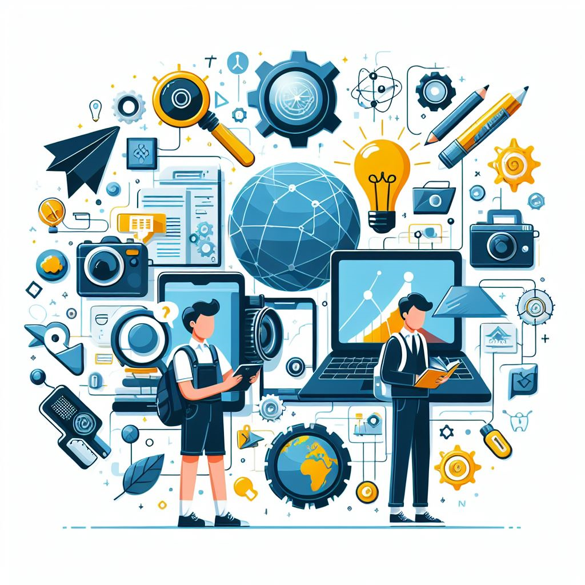
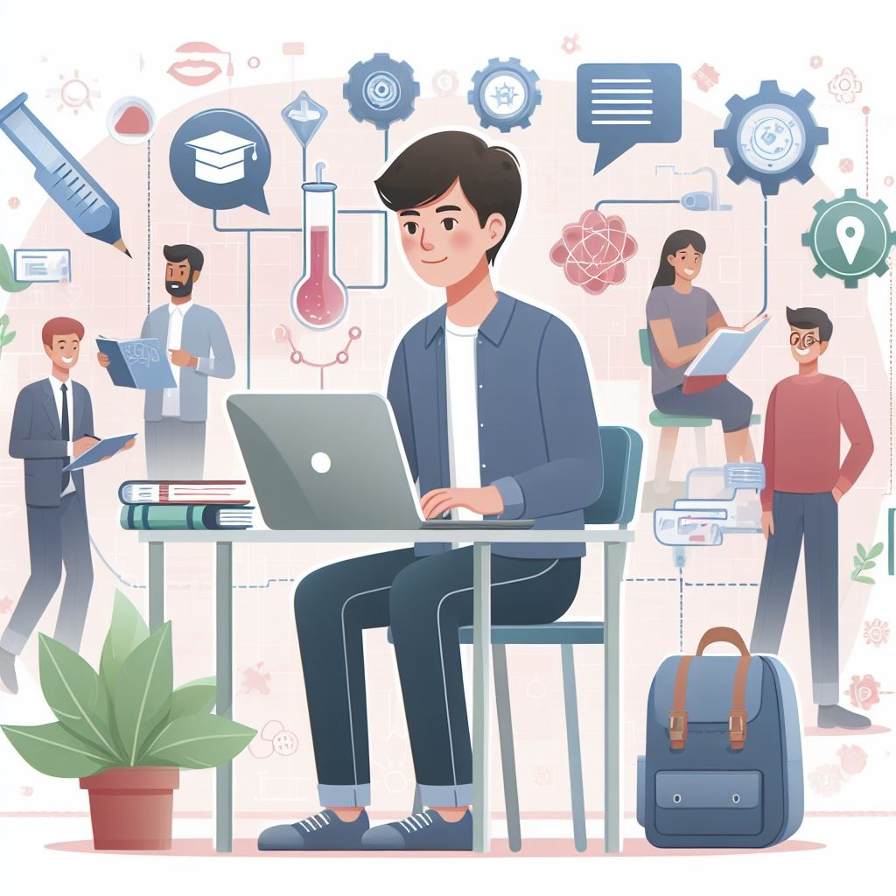
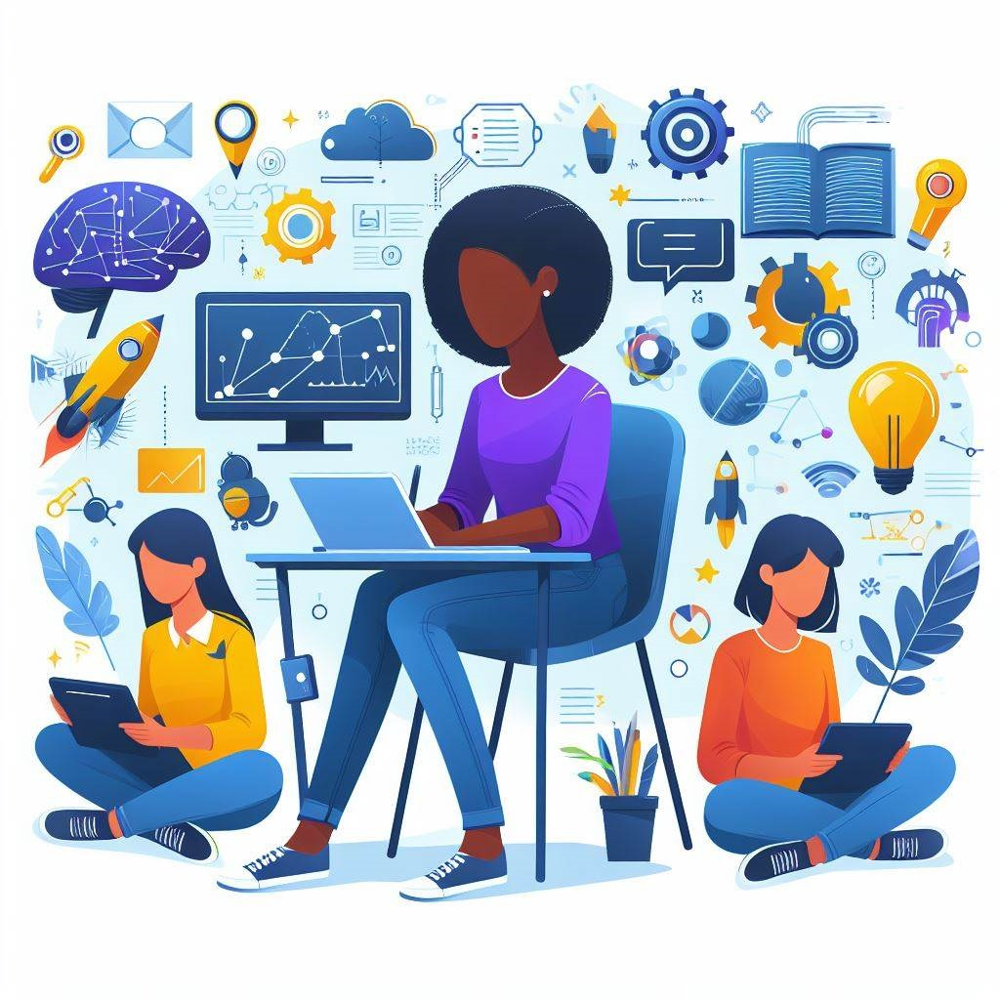
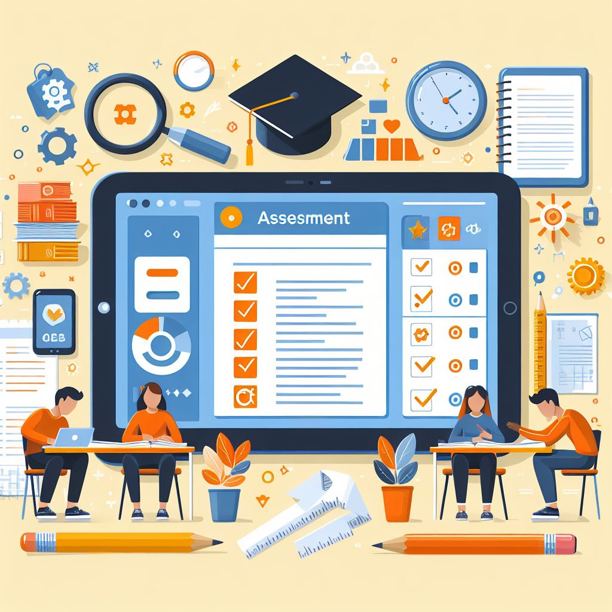

INTRODUCCION

En esta actividad, exploraremos juntos como la tecnologia ha revolucionado nuestras vidas, haciendolas mas comodas, entretenidas y conectadas. Descubriras como la tecnologia puede ser una herramienta increible para tus pasatiempos e intereses, y quien sabe, tal vez descubras una pasion nueva en el camino! Preparate para sumergirte en un mundo de innovacion y descubrimiento.
|
TAREA

Dise a un proyecto multimedia que explore el impacto de la tecnologia en un aspecto especifico de la sociedad actual. Puedes elegir un tema que te apasione, como la educacion, la salud, el entretenimiento, el medio ambiente, etc. Tu proyecto debe incluir:
1. Una investigacion sobre como la tecnologia ha transformado ese aspecto de la sociedad.
2. Ejemplos concretos de tecnologias utilizadas en ese ambito y su impacto.
3. Analisis de las ventajas y desventajas de la tecnologia en ese contexto.
4. Propuesta de como podria seguir evolucionando la tecnologia en ese campo en el futuro.
Al finalizar, deberas presentar tu proyecto en formato multimedia (presentacion, video, sitio web, etc.) y estar preparado para compartirlo con la clase en una exposicion verbal. Diviertete explorando el mundo de la tecnologia y su influencia en la sociedad!
|
PROCESO
Son los pasos que se sugieren para llevar a cabo la tarea, la cual se puede dividir en subtareas para el trabajo grupal.
Proceso sugerido para llevar a cabo la tarea:
1. Seleccion del tema:En grupos, elijan un aspecto de la sociedad actual que les interese y que este relacionado con la tecnologia. Pueden ser temas como la educacion, la salud, el medio ambiente, la comunicacion, etc.
2. Investigacion inicial:Investiga sobre como la tecnologia ha impactado ese aspecto de la sociedad. Recopila informacion relevante y ejemplos concretos.
3. Analisis de la informacion: Reunete con tu grupo para analizar la informacion recopilada y discutir las ideas clave que quieren incluir en su proyecto.
4. Diseno del proyecto: Decidan que formato utilizaran para su proyecto multimedia (presentacion, video, sitio web, etc.) y comiencen a disenar su contenido.
5. Creacion del contenido:Dividan las tareas entre los miembros del grupo para crear el contenido del proyecto. Esto puede incluir la redacci n de textos, la busqueda de imagenes y videos, la creacion de graficos, etc.
6. Revision y edicion:Una vez que tengan todo el contenido, revisen y editen juntos para asegurarse de que el proyecto sea coherente y este bien estructurado.
7. Presentacion del proyecto:Preparen una presentacion verbal para acompanar su proyecto multimedia. Practiquen juntos para asegurarse de que todos los miembros del grupo esten preparados para la exposicion.
8. Entrega y presentacion:Entreguen su proyecto segun las indicaciones del profesor y preparense para presentarlo ante la clase. No olviden ser creativos y disfrutar del proceso de aprendizaje!
|
RECURSOS

Aqu
se brinda a los alumnos una serie de sitios web previamente
seleccionados, de modo tal que se evite la perdida de tiempo en
la busqueda sin rumbo.
Aqui tienes un listado de recursos seleccionados:
TED Talks - Inspiradoras charlas sobre tecnologia y su impacto en la sociedad. - https://www.ted.com/talks
MIT Technology Review - Articulos y analisis sobre las ultimas tendencias tecnologicas. - https://www.technologyreview.com/
National Geographic - Technology - Reportajes y articulos sobre como la tecnologia esta cambiando el mundo. - https://www.ngenespanol.com/
The Verge - Noticias y analisis sobre tecnologia, ciencia, arte y cultura. - https://en.wikipedia.org/wiki/The_Verge
Future Timeline - Una especie de "linea de tiempo" que muestra como podria ser el futuro basado en tendencias actuales. - https://www.futuretimeline.net/
|
EVALUACION

Para evaluar el aprendizaje de los alumnos en esta actividad, se puede utilizar una rubrica que contemple los siguientes criterios:
1. Investigacion
La investigacion sobre el impacto de la tecnologia en la sociedad actual es completa y bien fundamentada?
Se presentan ejemplos concretos y relevantes?
Se demuestra comprension del tema?
2. Creatividad y originalidad:
El proyecto multimedia es creativo y original en su presentacion?
Se han utilizado recursos multimedia de manera efectiva para transmitir la informacion?
3. Analisis critico:
Se presentan ventajas y desventajas de la tecnologia en el aspecto de la sociedad seleccionado?
El analisis es profundo y muestra una comprension solida del tema?
4. Coherencia y estructura:
El proyecto multimedia tiene una estructura clara y coherente?
La informacion se presenta de manera ordenada y logica?
Presentacion oral:
La presentacion oral es clara, fluida y bien organizada?
Los alumnos demuestran conocimiento del tema y habilidades de comunicacion efectiva?
6. Colaboracion:
Los miembros del grupo han trabajado de manera colaborativa y han contribuido equitativamente al proyecto?
Se han respetado los roles asignados dentro del grupo?
Se puede asignar a cada criterio un puntaje y luego sumarlos para obtener la calificaci n final del proyecto. Tambien es importante proporcionar retroalimentacion especifica para que los alumnos puedan mejorar en futuros proyectos.
|
CONCLUSION
Felicidades por completar este emocionante viaje por el papel de la tecnologia en nuestra sociedad actual! A lo largo de esta actividad, hemos explorado como la tecnologia ha transformado diversos aspectos de nuestras vidas, desde la forma en que nos comunicamos hasta como aprendemos y trabajamos.
Esperamos que esta experiencia te haya permitido reflexionar sobre la importancia y el impacto de la tecnologia en el mundo que nos rodea. Quizas hayas descubierto nuevas formas en las que la tecnologia puede ser una herramienta poderosa para alcanzar tus metas e intereses.
Recuerda que la tecnologia sigue evolucionando y que tu tambien puedes ser parte de esa evolucion. Sigue explorando, aprendiendo y utilizando la tecnologia de manera responsable y creativa para seguir transformando nuestro mundo hacia un futuro mas innovador y conectado.
Gracias por participar y esperamos verte en futuras aventuras tecnologicas!
|
CREDITOS
Expreso agradecimientos a los proveedores de estos
recursos.
-(1) El papel de la tecnologia en la sociedad actual - Uxbi: http://webquest.sdsu.edu/
-(2) La influencia de la tecnologia en la actualidad: Un analisis detallado: www.aula21.net
-(3) El impacto de la tecnologia en la sociedad: beneficios y desafios:
fresno.cnice.mecd.es/~avaler3
|